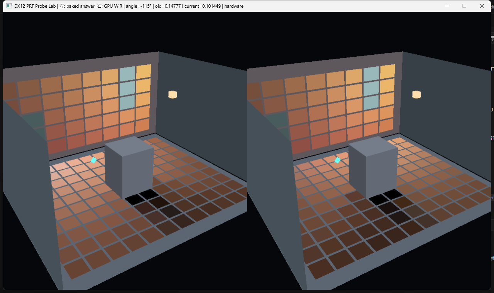

真实 GPU 自检
2.98023e-08
修正 irradiance 量纲后，在 RTX 5060 Ti 上重新构建并实测的 GPU readback / CPU 参考最大绝对误差；通过阈值为 1e-5。
一个可编译、可单步、可自检的原生对照实验：后墙 40 个 radiance bricks 构成 R，固定几何传输矩阵构成 W，GPU compute 计算地面 120 个 receiver 的 E = W · R。

左侧固定在旧 irradiance；右侧由本帧 GPU W·R 更新。截图标题中的 old/current 数值来自同一个被青色八面体标记的 receiver。
修正 irradiance 量纲后，在 RTX 5060 Ti 上重新构建并实测的 GPU readback / CPU 参考最大绝对误差；通过阈值为 1e-5。
Debug x64 自检读取 Info Queue；ERROR/CORRUPTION 会使进程返回非零。
点光源的世界坐标由 LightPositionFromAngle 生成；它是全向点光，因此 forward 不适用。每个 brick 保存当前出射 radiance R[b]，这部分随灯移动而变化。
先把后墙切成 8×5 个小反射片。灯每移动一帧，只重新计算这些片此刻有多亮；固定场景传输矩阵还不用动。
程序中的 lightColor=(1.0, 0.74, 0.42)，ambient=0.006×albedo；distance² 至少为 0.1，避免灯靠得极近时分母退化。
for 每个 wall brick:
计算 brick 到点光源的方向和距离平方
计算 max(brickNormal · lightDirection, 0)
计算距离衰减后的入射光
乘 brick.albedo / π，得到出射 radiance
写入 R[brick]const XMFLOAT3 toLight =
Subtract(lightPosition, brick.position);
const float distanceSquared =
std::max(0.1f, Dot(toLight, toLight));
const float ndotl = std::max(
0.0f,
Dot(brick.normal, Normalize(toLight)));
const float power =
5.6f * ndotl / (1.0f + 0.12f * distanceSquared);
radiance[index] = {
brick.albedo.x * lightRgb.x * power / std::numbers::pi_v<float>
+ 0.006f * brick.albedo.x,
brick.albedo.y * lightRgb.y * power / std::numbers::pi_v<float>
+ 0.006f * brick.albedo.y,
brick.albedo.z * lightRgb.z * power / std::numbers::pi_v<float>
+ 0.006f * brick.albedo.z,
1.0f,
};W[p,b] 不保存当前灯光颜色；它只保存 brick 到 receiver 的固定 visibility、两端 cosine、brick area 与 inverse-square 几何衰减。这正是 PRT Probe 与普通 Irradiance Probe 的核心分界。
对每个地面接收点，提前问 40 个墙面 brick：“你和我互相朝向吗？中间被盒子挡住吗？你占多大立体角？”答案固定后，移动灯只需换 R，不再重算几何。
receiver=120，brick=40，因此 W 有 4,800 个 float，约 18.75 KiB。教学程序启动时构建；生产项目通常离线烘焙、稀疏压缩并流送。
for 每个 receiver p:
for 每个 brick b:
如果 p 到 b 的线段穿过 blocker:
W[p,b] = 0
否则:
计算 receiver cosine
计算 brick cosine
W[p,b] = 两个 cosine * brickArea / distance²const XMFLOAT3 toBrick =
Subtract(brick.position, receiver.position);
const float distance = Length(toBrick);
const XMFLOAT3 direction = Normalize(toBrick);
const XMFLOAT3 reverseDirection{
-direction.x, -direction.y, -direction.z,
};
const float cosineReceiver = std::max(
0.0f, Dot(receiver.normal, direction));
const float cosineBrick = std::max(
0.0f, Dot(brick.normal, reverseDirection));
const bool blocked = SegmentIntersectsAabb(
receiver.position, brick.position, scene.blocker);
if (!blocked) {
transfer[receiverIndex * kBrickCount + brickIndex] =
cosineReceiver * cosineBrick * brick.area /
(distance * distance);
}每个 HLSL thread 负责一个 receiver，读取 W 的一整行和 40 个当前 brick radiance。没有隐藏 helper；下面就是实际编译的完整核心。
把一个 receiver 看成一行有 40 个旋钮的调音台：W 决定每个 brick 能传来多少，R 是 brick 当前输入颜色。逐项相乘再相加，就是 receiver 当前 irradiance。
receiver 37 的 row offset = 37×40 = 1480；thread 读取 gTransfer[1480…1519]，与 gBrickRadiance[0…39] 相乘后写 gReceiverIrradiance[37]。
receiver = 当前 GPU thread 的 x
如果 receiver 超出 120: 返回
sum = 0
row = receiver * 40
for brick 从 0 到 39:
sum += W[row + brick] * R[brick]
E[receiver] = sum[numthreads(64, 1, 1)]
void CSMain(uint3 dispatchThreadId : SV_DispatchThreadID)
{
const uint receiver = dispatchThreadId.x;
if (receiver >= gReceiverCount)
return;
float3 sum = 0.0;
const uint row = receiver * gBrickCount;
for (uint brick = 0; brick < gBrickCount; ++brick)
sum += gTransfer[row + brick] *
gBrickRadiance[brick].rgb;
gReceiverIrradiance[receiver] = float4(sum, 1.0);
}DX12 不知道资源“下一步要干什么”，所以程序必须显式绑定描述符、发 dispatch、插 UAV barrier，再切到 Copy Source。RenderGraph 版会从读写声明自动推导这些状态转换。
绑定包含 W、R、E 的 descriptor heap
设置 compute root signature 与 pipeline
上传 receiverCount=120、brickCount=40
dispatch ceil(120 / 64) 个 thread groups
插入 UAV barrier，确保 E 写完
把 E 从 UAV 状态切到 Copy Source
复制到 readback bufferm_commandList->SetComputeRootSignature(
m_computeRoot.Get());
m_commandList->SetComputeRootDescriptorTable(0, gpu);
gpu.ptr += 2ull * m_computeDescriptorStride;
m_commandList->SetComputeRootDescriptorTable(1, gpu);
const UINT constants[2] = {
prt::kReceiverCount,
prt::kBrickCount,
};
m_commandList->SetComputeRoot32BitConstants(
2, 2, constants, 0);
m_commandList->Dispatch(
(prt::kReceiverCount + 63) / 64, 1, 1);
D3D12_RESOURCE_BARRIER uav{};
uav.Type = D3D12_RESOURCE_BARRIER_TYPE_UAV;
uav.UAV.pResource = m_irradianceBuffer.Get();
m_commandList->ResourceBarrier(1, &uav);cmake -S . -B build -G "Visual Studio 18 2026" -A x64 cmake --build build --config Release build\Release\DX12_GI_Lab.exe --self-test build\Release\DX12_GI_Lab.exe
便携版本位于 bin/Release。请连同它下面的 shaders 目录一起复制，因为程序启动时会编译这些 HLSL 文件。
A / D 或方向键移动灯；Space 自动播放；R 把当前结果烘焙到左侧；鼠标拖动旋转，滚轮缩放，Esc 退出。
示例为了让结果可读，每帧同步 readback。生产代码应让 graphics shader 直接消费 GPU buffer 或 probe atlas，不能照搬这里的同步方式做性能模板。
这个 Lab 适合单步理解 root signature、descriptor、UAV barrier 与 readback；但当 GI 由 Voxelize、Mip、Cone Resolve 等多 Pass 组成时，手写状态转换会迅速膨胀。新的原生 RenderGraph Lab 已把六个 GI Pass 接入统一资源图，并在 D3D12/Vulkan 上用同一 HLSL 验收。
两条路径互补：本页展示“一个 compute pass 的所有 DX12 细节”；RenderGraph 页展示“多个 GI pass 的资源依赖、自动 barrier、跨后端和中间资源预览”。